Task Manager 以原生 HTML、CSS、JavaScript 完成全部功能，並用 Vue 3 重新實作新增、完成、刪除三項功能。
| 提交項目 | 內容 |
|---|---|
| Web App 連結 | 【待填：部署後的網址】 |
| Vue 版連結 | 【待填：vue.html 的網址】 |
| 程式碼連結 | 【待填：GitHub repo 或 Codepen 網址】 |
| 檔案 | 用途 |
|---|---|
| index.html | 頁面結構（第一階段） |
| style.css | 版面、RWD、hover 與 focus 效果（第二階段），Vue 版共用 |
| script.js | 新增、完成、刪除、篩選、統計（第三階段） |
| vue.html | Vue 3 版本（第五階段），以 CDN 載入 Vue，不需安裝 |
頁面載入或重新整理後，標題、輸入欄位、新增按鈕、篩選區域、任務清單與統計資訊都在，因為這些元素直接寫在 index.html 裡。
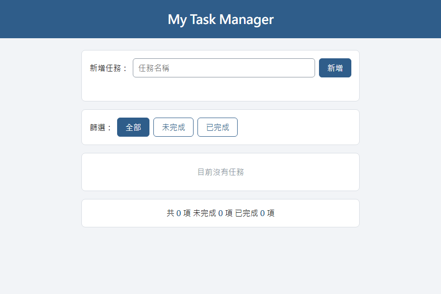
頁面使用了 header、main、section、form、label、button、ul 與 li。最重要的語意化區域是新增任務的表單，程式碼中已用註解標示：
<!-- ★ 最重要的語意化區域：用 form 包住 label + input + button，
label 的 for 對應 input 的 id，點文字就能聚焦輸入框；
button type="submit" 讓滑鼠點擊和按 Enter 都能送出 -->
<section class="add-task">
<form id="task-form">
<label for="task-input">新增任務：</label>
<input type="text" id="task-input" placeholder="任務名稱">
<button type="submit">新增</button>
</form>
<p id="message"></p>
</section>選這一區的原因：form 加上 type="submit" 的按鈕，讓按 Enter 和點按鈕走同一個 submit 事件；label 的 for 讓輸入框有明確名稱，螢幕閱讀器也讀得到。
每個 section 是一張白色卡片，新增、篩選、清單、統計四個區塊分開。主要按鈕是藍色、刪除按鈕是紅色，已完成的任務變灰並加上刪除線。
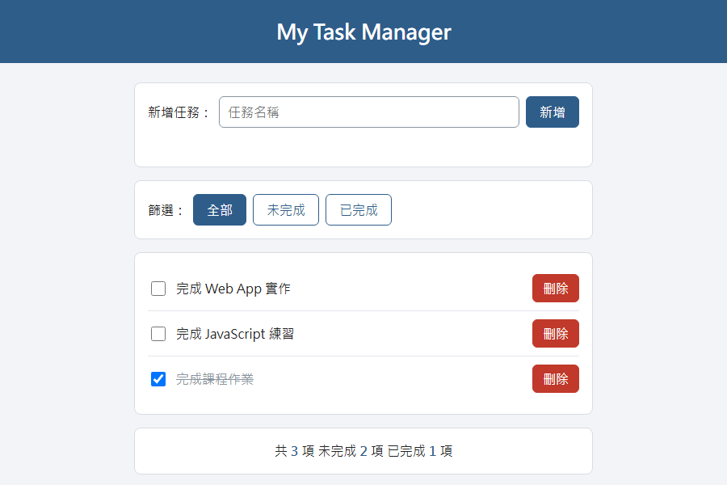
寬度 480px 以下時，表單改成直向排列，輸入框和新增按鈕佔滿寬度，三個篩選按鈕平分一列。電腦版畫面見上圖；下圖是 375px 寬的手機版，最後一筆是刻意加入的超長任務名稱，會自動換行，沒有超出畫面。
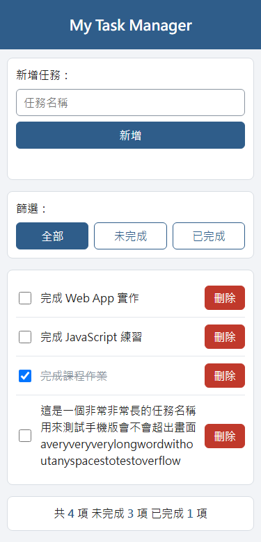
@media (max-width: 480px) {
/* 表單改成直向排列，輸入框和按鈕都佔滿寬度 */
#task-form {
flex-direction: column;
align-items: stretch;
}
.filter-btn {
flex: 1;
padding: 8px 4px;
}
}
/* 任務名稱太長時自動換行，不要超出畫面 */
.task-item span {
min-width: 0;
overflow-wrap: anywhere;
}輸入框有 :focus 效果：聚焦後邊框變藍並出現一圈光暈。互動前的畫面是 Checkpoint 2-1 的圖，下圖是點進輸入框之後。
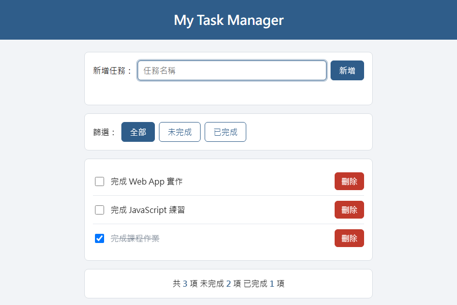
按鈕另有 :hover 效果，滑鼠移上去時顏色變深。【待補：滑鼠移到「新增」按鈕上的截圖，需本人操作擷取】
button:hover {
background: #1f4263;
border-color: #1f4263;
}
#task-input:focus {
outline: none;
border-color: #2f5d8a;
box-shadow: 0 0 0 3px rgba(47, 93, 138, 0.3);
}輸入「完成期末專題」後按新增，清單多一筆任務，輸入框清空，統計從 2 項變成 3 項。
新增前：
新增後：
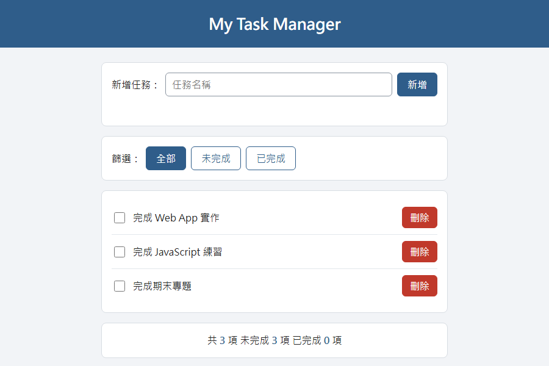
沒有輸入內容（或只輸入空白）就按新增，不會新增任務，並顯示紅字提示「請輸入任務名稱！」：
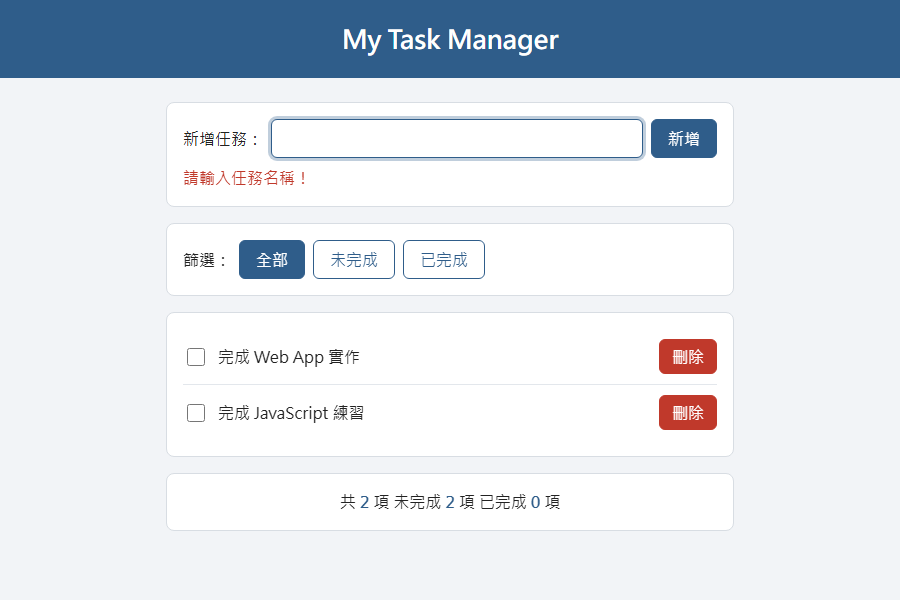
勾選「完成 Web App 實作」後，該任務變灰並加上刪除線；再點一次會恢復成未完成。
未完成：
已完成：
點「完成 Web App 實作」右邊的刪除按鈕，該任務從畫面消失。
刪除前：
刪除後：
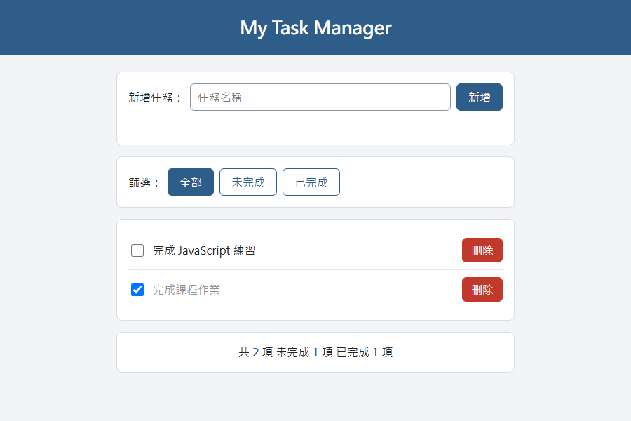
三個篩選按鈕切換顯示範圍，目前選中的按鈕是實心藍色。「全部」的畫面是 Checkpoint 3-3 刪除前那張圖：2 項未完成、1 項已完成。
未完成：
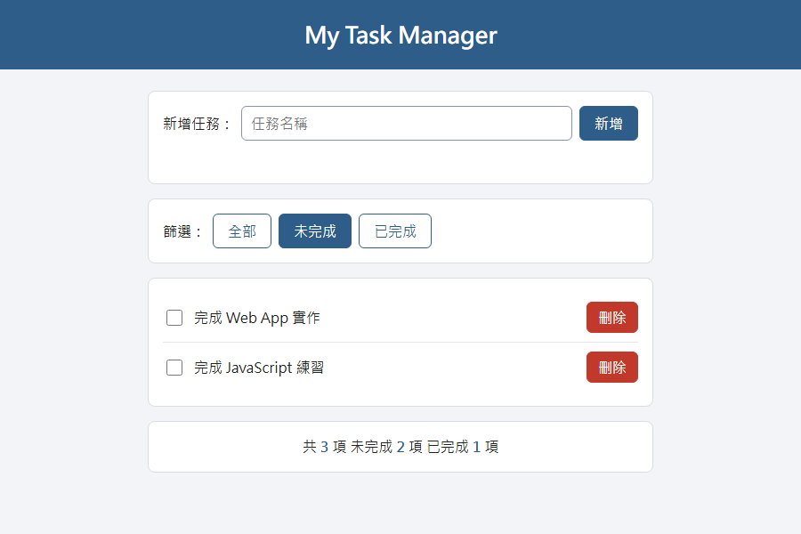
已完成：
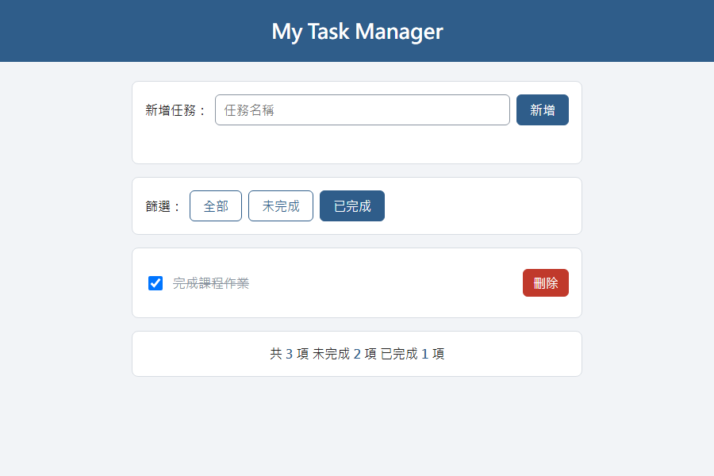
篩選只改變顯示的任務，統計數字仍然是全部任務的數量。
頁面下方顯示總數、未完成數、已完成數，每次新增、完成、刪除後都會重新計算。上面各查核點的截圖已經拍到數字變化：
| 操作 | 操作前（共／未完成／已完成） | 操作後 | 截圖位置 |
|---|---|---|---|
| 新增一項 | 2 / 2 / 0 | 3 / 3 / 0 | Checkpoint 3-1 |
| 完成一項 | 3 / 3 / 0 | 3 / 2 / 1 | Checkpoint 3-2 |
| 刪除一項未完成任務 | 3 / 2 / 1 | 2 / 1 / 1 | Checkpoint 3-3 |
新增任務的流程是：表單 submit 事件檢查輸入 → addTask() 把任務放進 tasks 陣列 → render() 依陣列重新產生畫面。
| 問題 | 答案 | 位置（script.js） |
|---|---|---|
| 使用哪一個變數保存任務？ | tasks 陣列，每筆是 { id, text, completed } 物件 | 第 4 行 |
| 哪一段程式負責新增？ | addTask(text)，用 tasks.push() 加入新任務；由表單的 submit 事件呼叫 | 第 18–22 行、第 118–134 行 |
| 哪一段程式負責更新畫面？ | render()，清空 <ul> 後依 tasks 重新建立每個 <li>，最後呼叫 updateStats() 更新統計數字 | 第 57–104 行 |
相關程式碼：
// 用陣列保存所有任務，每個任務是 { id, text, completed }
let tasks = [];
let nextId = 1;
// ---------- 新增任務 ----------
function addTask(text) {
tasks.push({ id: nextId, text: text, completed: false });
nextId++;
render();
}
// ---------- 事件：送出表單 ----------
taskForm.addEventListener('submit', function (event) {
event.preventDefault(); // 避免表單送出後重新整理頁面
const text = taskInput.value.trim();
// 沒有輸入內容（或只有空白）就不新增
if (text === '') {
message.textContent = '請輸入任務名稱！';
taskInput.focus();
return;
}
message.textContent = '';
addTask(text);
taskInput.value = '';
taskInput.focus();
});任務名稱用 textContent 寫入畫面，所以輸入 <b>x</b> 這類內容會當成文字顯示，不會被當成 HTML 執行。
選用 Vue 3，寫在 vue.html，重新實作新增、完成、刪除三項功能。Vue 用 CDN 載入，樣式共用 style.css。
Vue 正常掛載，空清單時由 v-if 顯示「目前沒有任務」，統計數字由 {{ }} 綁定顯示。
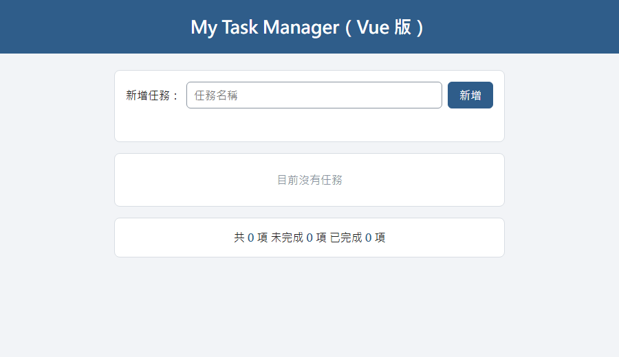
按新增後 tasks 陣列多一筆資料，v-for 立刻多畫出一個 <li>，統計從 1 項變成 2 項，沒有手動操作 DOM。
新增前：
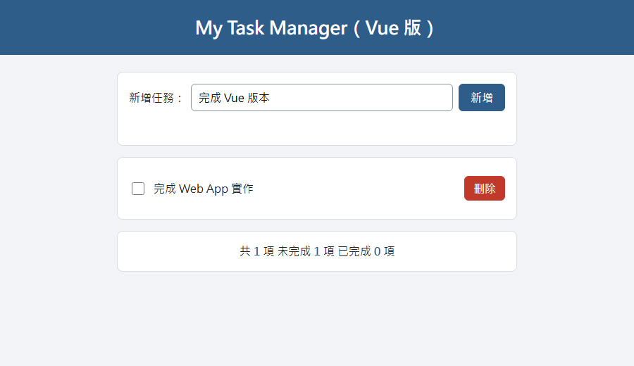
新增後：
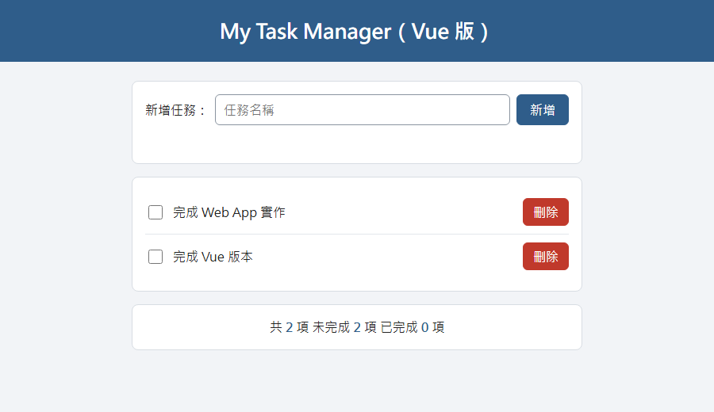
核取方塊用 v-model 綁定 task.completed，勾選後任務加上刪除線，再點一次恢復。操作前是上一張圖（兩項都未完成），下圖是勾選第一項之後。
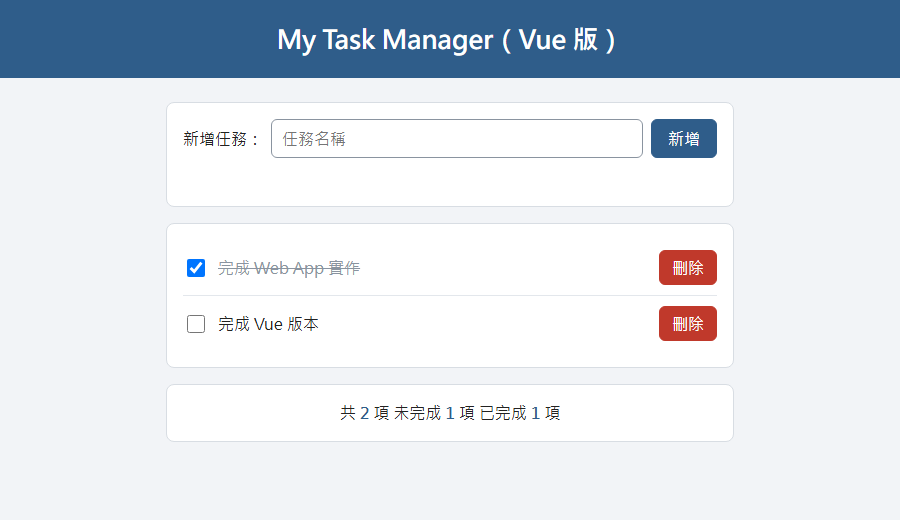
點「完成 Web App 實作」的刪除按鈕後，該任務消失，剩 1 項。操作前是 Checkpoint 5-2 新增後的圖（共 2 項）。
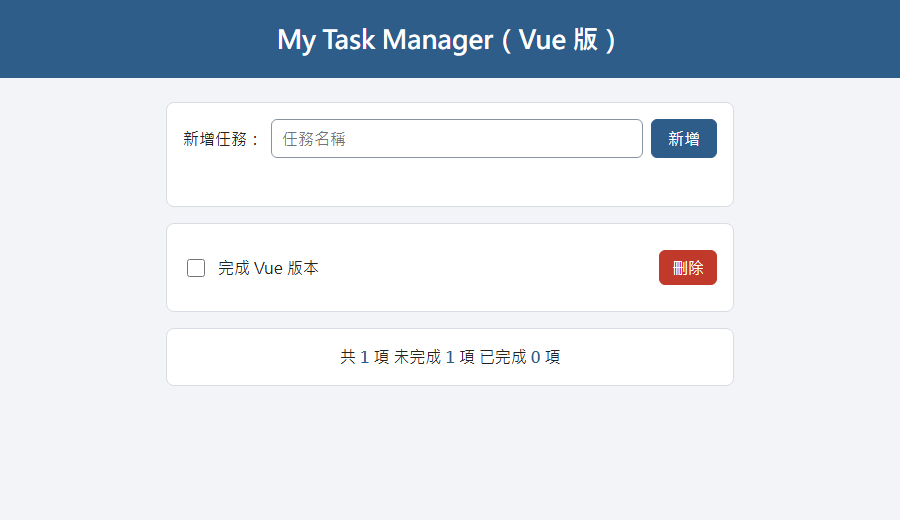
<form id="task-form" @submit.prevent="addTask">
<label for="task-input">新增任務：</label>
<input type="text" id="task-input" v-model="newTask" placeholder="任務名稱">
<button type="submit">新增</button>
</form>
<li v-for="task in tasks" :key="task.id" class="task-item" :class="{ completed: task.completed }">
<label>
<input type="checkbox" v-model="task.completed">
<span>{{ task.text }}</span>
</label>
<button type="button" class="delete-btn" @click="deleteTask(task.id)">刪除</button>
</li>methods: {
// 新增任務：tasks 改變後，Vue 會自動更新畫面
addTask() {
const text = this.newTask.trim();
if (text === '') {
this.message = '請輸入任務名稱！';
return;
}
this.tasks.push({ id: this.nextId, text: text, completed: false });
this.nextId++;
this.newTask = '';
this.message = '';
},
// 刪除任務
deleteTask(id) {
this.tasks = this.tasks.filter(function (t) {
return t.id !== id;
});
}
}10 個測試案例全部通過。測試方式：用無頭（headless）Microsoft Edge 載入實際的 index.html 與 vue.html，由腳本模擬輸入與點擊，再檢查畫面內容；本報告的截圖也是同一方式擷取。【待本人在瀏覽器手動操作複測後確認】
| Test Case | 測試內容 | 預期結果 | 實際結果 | Pass/Fail |
|---|---|---|---|---|
| TC01 | 新增正常任務：輸入「A」按新增 | 任務出現 | 清單出現未勾選的「A」，輸入框清空 | PASS |
| TC02 | 新增空白任務：只輸入空白按新增 | 不應新增 | 清單數量不變，顯示「請輸入任務名稱！」 | PASS |
| TC03 | 完成任務：勾選「B」 | 狀態改變 | 「B」打勾並加上刪除線 | PASS |
| TC04 | 取消完成：再點一次「B」 | 恢復未完成 | 「B」恢復未勾選，統計回到 3 / 3 / 0 | PASS |
| TC05 | 刪除任務：刪除「A」 | 任務消失 | 清單剩「B」「C」 | PASS |
| TC06 | 篩選未完成（A、C 未完成，B 已完成） | 只顯示未完成 | 只顯示「A」「C」 | PASS |
| TC07 | 篩選已完成（同上） | 只顯示已完成 | 只顯示「B」 | PASS |
| TC08 | 統計數字：新增 3 項、完成 1 項、取消、刪除 1 項 | 數字正確更新 | 3 / 3 / 0 → 3 / 2 / 1 → 3 / 3 / 0 → 2 / 2 / 0 | PASS |
| TC09 | 手機尺寸：375px 寬，含超長任務名稱 | 不超出畫面 | 輸入框、按鈕、任務文字都在畫面內，長文字自動換行 | PASS |
| TC10 | Vue：新增 2 項、勾選、取消、刪除 | 功能正常 | 新增後 2 項；勾選後已完成 1 項；取消後 0 項；刪除後剩 1 項（Vue 3.5.43） | PASS |
測試：清單已有 2 項時，只輸入空白按新增。預期：不應新增。實際：清單仍是 2 項，出現紅字提示。結果：PASS。
測試：刪除「完成 Web App 實作」。預期：任務消失。實際：任務消失，統計從共 3 項變成共 2 項。結果：PASS。刪除前的畫面見 Checkpoint 3-3。
測試：375px 寬度下顯示 4 項任務，其中一項名稱超長。預期：不超出畫面。實際：所有元件都在畫面內。結果：PASS。
本次實作有使用 AI。以下只記錄實際發生過的對話；目前只有兩段，第三段與 B3、B4 需本人補上。
☐ 沒有使用 AI
☑ 有使用 AI
Claude（透過 VS Code 的 Claude Code 擴充功能）。
| 項目 | 對話 1 | 對話 2 | 對話 3 |
|---|---|---|---|
| ① 遇到的問題 | HTML 結構已完成，但 style.css 與 script.js 還是空的，Vue 版也尚未開始 | 程式完成後，需要整理各查核點的證據與報告 | 【待補】 |
| ② 詢問 AI 的問題 | 「幫我完成這份作業」 | 請 Claude 完成報告，並要求報告包含 AI 使用紀錄 | 【待補】 |
| ③ AI 的回答 | Claude 讀了作業說明與現有檔案，寫出 style.css、script.js、vue.html，並用無頭 Edge 測試。測試時它發現統計列的文字間距過大，把 flex 排版改成置中文字。它也提醒：作業規定 AI 用於局部問題，成果需本人測試確認 | Claude 用無頭 Edge 擷取 17 張截圖並整理成這份報告。它表示 AI 使用紀錄只能寫真實發生的對話，不足的部分留空由本人補上 | 【待補】 |
| ④ 最後採取的做法 | 【待本人填寫】 | 【待本人填寫】 | 【待補】 |
| ⑤ 是否修改 AI 的建議 | 【待本人填寫】 | 【待本人填寫】 | 【待補】 |
完整對話紀錄：【待附：Claude Code 的對話截圖或匯出檔】
【待本人填寫：AI 的回答有沒有直接解決問題？如果沒有，後來如何修改問題或自己解決？】
【待本人填寫：目前的對話中還沒有這樣的例子】